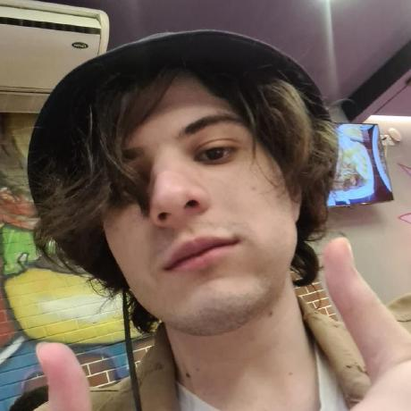

Matheus Zorzete
Minha História
Quando eu era menor, por volta de meus 2 ou 4 anos de idade, eu mexi
pela primeira vez em um computador, naquele momento, meus olhos
brilhavam com as possibilidades em minha frente. Obviamente na época,
eu apenas o usei para jogar, como uma simples criança, e a partir
disso eu comecei a jogar sem parar todos os dias. Conforme eu fui
crescendo, fui me aprofundando mais e mais no mundo dos jogos, e isso
já estava bom para mim, eu apenas jogava e passava o tempo, recebia
spoilers e seguia em frente.
Mas depois de um tempo, ouvi de um streamer famoso sobre um jogo
chamado Hollow Knight, do qual ele falava muito bem, e eu, já curioso
na época, fui atrás de comprar o jogo para testar e ver se eu curtia,
e foi ali que minha visão sobre tudo se transformou, eu enfrentei
desafios, explorei lugares nunca antes vistos e me diverti de uma
forma inexplicável, eu não sabia nada sobre o jogo ou dos desafios que
me esperavam, mas eu enfrentei tudo de frente e isso foi o mais
divertido pra mim, me fez me sentir bem comigo mesmo por vence-los.
Curiosidade
O jogo de instiga a querer explorar cada parte do seu incrível mapa, canto a canto, e isso se refletia em mim até mesmo antes do jogo, e quando eu conheci sobre Hollow Knight, essa curiosidade apénas aumentou sobre mim, querendo sempre explorar mais e mais do mundo.
Determinação
Cada desafio do jogo requer uma vontade de ferro para passar, existiam chefes que eu demorava mais de 3 dias para passar, mas eu nunca desisti de dentar, mantendo minha determinação sempre elevada, mudando minhas estratégias a cada tentativa, até que no fim, eu saísse vitorioso com um sorriso e uma satisfação de ter superado um desafio.
Empatia
Existem diversos personagens em Hollow Knight, e um dos objetivos opcionais do jogo e levar uma flor para alguns deles, e isso faz com que esses personagens fiquem felizes, mesmo com todo o caos que estava no reino. Aqueles personagens tinham perdido tudo, e mesmo assim, o jogador consegue faze-los felizes novamente, tendo que superar um desafio para ajudar aquelas pessoas. Além de toda a jornada do protagonista que é puramente um dever dele, seu propósito de vida e ser um receptáculo para selar um mal, mesmo que ele morra no processo.